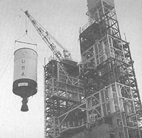

[155] It might seem logical to narrate the story of Saturn V's various stages from the bottom up, beginning with the S-IC stage. However, the stages were not built that way. The Saturn V third stage, the S-IVB, evolved first, based on upper stages of the Saturn I and Saturn IB. As the first large unitary Saturn tankage (not a cluster of individual tanks), a rather detailed discussion in chapter 7 of some of the procedures used in SIV-IVB fabrication and manufacture eliminates repetitious discussion of similar procedures for other stages in succeeding chapters.
The S-IC and S-II stages, while sharing a common diameter, used different propellants. Although S-II contracts were let prior to those of the S-IC, the S-II became the pacing item in the Saturn program, completing its firing tests later than the other components. Chapter 8 explores S-IC and S-II commonalities and contrasts, emphasizing the imbroglio of the S-II program and its eventual recovery.
Computer technology played a consistent role in the evolution of the Saturn vehicles. Chapter 9 surveys computer activity from manufacturing, through stage test, to launch. In flight, the computers of the instrument unit guided and controlled the Saturn V, including the fiery separation of Saturn V stages during their journey into space.
[157] The upper stage of both the Saturn IB and Saturn V evolved from the upper stage of the Saturn I. All three upper stages were manufactured by Douglas Aircraft Company, used liquid hydrogen and liquid oxygen as propellants, and shared the same basic design concepts and manufacturing techniques. The Saturn I upper stage (the S-IV) used a cluster of six engines, but the Saturn IB and Saturn V upper stages (designated the S-IVB for both versions) possessed a larger diameter and mounted a single engine of different design. During one early period of Saturn planning (about 1958-1959), the S-IV was planned as the fourth stage of a vehicle known as the C-4, but the changes and deletions involving the original "C" series left the S-IV in a different role.1 Instead of entering service as a fourth stage, the S-IV became the second stage of the Saturn I. During late 1959 and early 1960, NASA began plans to name a major contractor for the S-IV stage.
Because the S-IV was the first major Saturn stage hardware to be built under contract, NASA proceeded very carefully. The situation was even more delicate because Wernher von Braun and the Army Ballistic Missile Agency (ABMA) team had not yet been officially transferred from the Army into NASA, although the ABMA group was to be deeply involved in the contractor selection process for the Saturn upper stage.* NASA Headquarters assiduously followed the negotiations.
[158] At Huntsville, Alabama, on 6 January 1960, Abraham Hyatt, Deputy Director of Launch Vehicle Programs at NASA Headquarters, met with von Braun, Eberhard Rees (von Braun's technical adviser), and ABMA staff to ensure that S-IV contract procedures met NASA expectations. Hyatt got the ABMA team to loosen up a little on strict constraints that would limit the number of potential applicants; it was agreed that at least 20 companies would get specific invitations to submit proposals. Any other company could request to participate, although Hyatt felt that "most companies will realize that this is a 'big league' competition and I doubt that there will be any companies aside from those selected who would seriously consider submitting a full scale proposal."
During the all-day session at Huntsville, ABMA agreed to set up a technical evaluation team and a business evaluation team to analyze proposals from the various contractors. A source selection board, staffed by ABMA and NASA Headquarters representatives, would then review the findings of the evaluation teams and make a final recommendation to the Administrator. A calendar called for a bidders' conference at Huntsville, 26-27 January, contractor proposals submitted 29 February, and source selection board recommendations by 1 April. ABMA was also directed to submit second-stage specifications, a funding plan, and a management plan to Headquarters.2
By the time of the bidders' conference, not all the S-IV specifications had been established. Rather than delay the conference, NASA and ABMA agreed to have bidders submit proposals for a stage to load 54 500 kilograms. Within a month, ABMA promised to determine the precise loading and use this figure in negotiating final details with the winning contractor. Von Braun explained this situation to the first session of the bidders' conference on 26 January. The prospective contractors got an extensive briefing from top NASA and ABMA managers and received a bulky packet of materials to use as guidelines in submitting proposals. The next day was spent answering questions. Following that, the prospective contractors had one month to prepare their detailed proposals; NASA and ABMA had the following month to evaluate them.3 After considering the scope of the project and the guidelines laid down by ABMA, only 11 contractors submitted proposals.4
The source selection board made its presentation to NASA Administrator T. Keith Glennan on 19 April 1960. By 26 May, Glennan had reviewed all the relevant materials, and NASA announced that Douglas Aircraft Company had been selected for further discussions leading to a [159] final contract for the S-IV stage.5 Douglas** and Convair had been the leading contenders, and Glennan finally based his decision on certain subjective factors. The findings of the Source Selection Board tended to give Convair a slight edge in technical competence, although Glennan remarked that "the Douglas proposal, in some ways, seemed more imaginative." Convair, however, scored lower in the business and management areas. No matter who was chosen, Glennan said, minor shortcomings in either the business or the technical areas could be easily corrected. Other reasons, therefore, favored Douglas.
Glennan pointed out that Convair would have a continuing business in liquid hydrogen rockets because of its own Centaur program. Moreover, the Centaur was ticketed for use in proposed Saturn vehicles as an upper stage called the S-V. Glennan apparently had a strong reservation about giving Convair the S-IV stage as well, because "a monopolistic position in this field seems possible." In short, Glennan chose Douglas because "broadening the industrial base in hydrogen technology is in the best national interest.6
The choice of Douglas, and the reasons for that choice, stirred a minor controversy. On 12 May, the Committee on Science and Astronautics, House of Representatives, asked the General Accounting Office to investigate NASA's selection of Douglas. The report of the General Accounting Office, dated 22 June 1960, generally sustained Glennan's statements on the matter and noted that his decision "was consistent with the written presentation of the Source Selection Board and other related documents." The report also supported the NASA position on problems concerning logistics and other questions.7
During May and June, NASA, Huntsville, and Douglas went ahead with the negotiations that preceded the signing of a final contract. Meeting two or three times a week on the West Coast, conferees hammered out details of costs for planning, tooling, engineering, testing, and manufacturing. A second group worked out details of technical design and engineering and set up continuing working panels that included both government and contractor counterparts. This combination of close collaboration and monitoring by NASA set the pattern for future relationships with Douglas, as well as other stage contractors.8 (For details of NASA-contractor relationships, see chapter 9.) During the succeeding months, decisions on engines, configurations, and missions influenced the evolution of the S-IV and led to two versions of its successor, the S-IVB.
[160] In August 1960, NASA announced that the S-IV would use a cluster of four Pratt & Whitney rocket engines.9 When the development of the Pratt & Whitney LR-119 engines ran into snags, MSFC officials began to lean more and more to the idea of using six less powerful versions. Moreover, the cluster of six engines opened the possibilities of raising the payload capability and promised better inflight control. Finally, the RL-10 type was adopted (see chapter 4). By May 1961, Pratt & Whitney had put together final mockup of the RL-10 and shipped copies to both Douglas and Convair for installation and interface compatibility checks.
On 25 January 1962, NASA Headquarters confirmed the role of MSFC as the lead center to proceed with the two-stage C-1 and to design and develop a three-stage vehicle, the C-5. Mission planners envisioned a series of development flights, testing each stage in successive combinations before a full-dress flight test of the three-stage C-5 vehicles. Eventually, the C-5 would be topped off by an improved S-IV, known as the S-IVB. For this stage, a single J-2 engine would provide the thrust to escape Earth orbit and boost a 44-metric ton payload to the vicinity of the moon.10 Under this scheme, the S-IVB would have been the last stage to be flight-tested and the "junior member" of the Saturn C-5 vehicle when the big rocket finally lifted off as a complete stack. The reverse happened. The single-engine S-IVB became the real veteran of the Saturn program, active in more launches than any other stage. This was because it became part of an interim Saturn vehicle, between the C-1 and the C-5.11 The new Saturn class vehicle, designated C-1B, relied on an uprated version of the original C-I first stage but included the S-IVB as the second stage.
NASA acquired the S-IVB under a sole-source procurement contract with the Douglas Aircraft Company. Plans for this variation of the S-IV stage began with an ad hoc working group established at MSFC in August 1961, and NASA Headquarters approved Douglas as the sole-source contractor in December. The space agency seemed somewhat sensitive about the S-IVB contract, because there had been no bidders' conference or active competition by other firms. NASA awarded the contract to Douglas for reasons of cost and schedules: "The similarity of the S-IVB and S-IV stages permits the exploitation of both facilities and technical skills of the contractor now developing the S-IV stage, resulting in substantial savings in both time and money to NASA." In a memo to Associate Administrator Robert Seamans, D. Brainerd Holmes stressed the similarities in configurations which permitted use of the same tooling and materials, as well as facilities for checkout, static testing, and captive firing.12
Mission planners at NASA saw a means to accelerate the Apollo program by using the high-energy S-IVB stage of the C-1B to launch manned, Earth-orbital missions with a full-scale Apollo spacecraft. The [161] new vehicle, launched with the instrument unit (IU) segment used on the C-1, also provided opportunities to refine the maneuvers for the lunar missions. The NASA announcement of the C-1B on 11 July 1962 included word that lunar orbit rendezvous (LOR) was the technique chosen for the manned lunar landing missions with the Saturn C-5 launch vehicle. The S-IVB, with its capability for heavier payloads and reignition for translunar injection, was an important element of the LOR scheme. The C-1B offered a fruitful method to try out the critical transposition maneuver, docking of the command and service modules (CSM) and the lunar module (LM), and the translunar sequence of the S-IVB upper stage. During the summer of 1962, Douglas complied with MSFC directives to make the comparatively uncomplicated modifications of the S-IVB to fly on the C-1B vehicle. Early in February 1963, the "C" designation was dropped once and for all. The three Saturns now became the Saturn I, Saturn 1B, and Saturn V.13
Nearly all of the LOX-kerosene boosters in use when the Saturn program began reflected a direct linage from the ballistic missiles of the 1950s. Although the Thor performed yeoman service for unmanned satellites and probes, and the Atlas and Titan operated successfully through the Mercury and Gemini programs, these boosters had not been designed for such missions. Nor were they capable of orbiting the manned payloads expected in the Saturn program. For these reasons, a unique, staged, large payload-oriented launch vehicle was indicated.
[162] The upper stages of such a vehicle were critical to the eventual success of the mission-especially the top stage, which inserted the payload into the final, stabilized orbit. Douglas engineers were emphatic. "The overall performance of the end-stage has greater influence than the primary stages. The Saturn V launch vehicle for the lunar mission requires 50 pounds [23 kilograms] of booster weight at liftoff for each pound of payload injected into a translunar trajectory," they explained. "Without high-energy upper stages this factor would be significantly greater."14 The key to these high-energy stages was liquid hydrogen as the fuel. An engineer from Douglas, the eventual contractor of the S-IV and the S-IVB, summed up the significance of the decision to use liquid hydrogen. "The combination of hydrogen and oxygen for propellants made the moon shot feasible," he declared. "Its use in upper stages results in a significant increase in performance over the propellant combinations of oxygen and kerosene then in use in first-stage boosters."15
Many aspects of the S-IV design were transferred directly to the S-IVB, even though it mounted only one engine, instead of a cluster of six. The configurations of both upper stages depended on the mission requirement, and ultimately, on the location of the stages in the various Saturn vehicles. Originally, Douglas planned a 5.6-meter-diameter stage for the S-IVB, designed for Earth orbit rendezvous (EOR), requiring a coast in low Earth orbit for as long as 30 days. This permitted time for subsequent launches of other Saturn and Apollo hardware, rendezvous, and preparation for injection into lunar transfer orbit. As the mission profile changed from EOR to LOR, the S-IVB design requirements shifted to a four-day coast period, although the final mission profile called for a four-and-a-half hour coast in low Earth orbit, followed by a translunar injection burn and a two-hour period in translunar coast. Throughout this time of design discussions with MSFC, the proposed stage diameter remained at 5.6 meters, with an interstage to adapt to the 1O-meter diameter of the S-II stage of the preliminary C-5 design. Shortly before NASA's final contract definition of the Saturn V version, Douglas received a design change notice to go from a 5.6-meter version to a 6.6-meter tank. The reason for the change related to the mission of the interim Saturn IB, and the increased diameter allowed added payload capability for launching and testing Apollo components in Earth orbit.
The increased S-IVB capability was also compatible with its ultimate role in Saturn V as envisioned at MSFC. By 1964, the details were fairly well defined and the program manager for the S-IVB, Roy Godfrey, outlined them at a NASA conference in Houston. Briefly, the Saturn V was to place a spacecraft into a translunar trajectory, enable a soft landing on the moon with a manned payload, and return to Earth. In the mission, the S-IVB had two critical responsibilities: get the Apollo craft into orbit, then restart and insert the payload into the translunar trajectory. The [163] orbital phase left the S-IVB, instrument unit, and Apollo spacecraft in an Earth orbit of 185 kilometers, where it remained for about four and a half hours, or time for three orbits of the Earth. Following the powered flight, which consumed about half of the propellant, the stage relied on its auxiliary propulsion system during the orbital coast, to ensure proper attitude control and "ullage orientation" of the remaining propellants toward the bottom of the tank prior to engine restart-"ullage" being an old brewmaster's term that referred to the volume of air above a partially full container. After restart, the second burn put the S-IVB and Apollo spacecraft into the translunar trajectory and consumed the remainder of the propellant. With burnout of the S-IVB verified, the transposition maneuver was carried out-a nose-to-nose rendezvous of LM and CSM. Concluding this maneuver, the spent S-IVB and instrument unit were separated from the LM-CSM by retrofire ordnance aboard the S-IVB, and the mission of the Saturn V third stage was over.16
The nature of the S-IVB mission imposed special requirements on its design. For one thing, the engine and stage needed the capability to restart in orbit. The stage had to have special equipment to ensure storage of propellants and proper orientation while in Earth orbit for four to five hours. The advantages obtained from the mission profile, primarily the coasting orbit and the 185-kilometer altitude outweighed the penalties. At the same NASA conference in Houston in 1964, the head of the Aero-Astrodynamics Laboratory at M5FC, E. D. Geissler, explained the tradeoffs in choosing this particular mission profile.
A "one shot" launch to the moon, as opposed to the LOR mode, had the advantage of permitting a somewhat larger payload. The Earth-orbital sequence carried with it a weight penalty of some 1360 kilograms to supply the S-IVB, IU, LM, and CSM systems with longevity and life support for the extra four to five hours. On the other hand, the "one-shot" launch had to be precisely plotted for liftoff at a fleeting instant of time within a given month. Injection in a direct lunar trajectory could take place only at a time when the Earth and the moon were so aligned that the liftoff point was precisely opposite the moon. The LOR sequence, incorporating a period of coasting, made liftoff much less time-critical. The time of departure from Earth orbit was also less critical, since the "launch window" in Earth orbit lasted about four hours and recurred twice daily. Moreover, the extra time in Earth orbit permitted more accurate tracking of the vehicle and allowed the mission controllers to plot a far more accurate start of the "burn" for insertion into the lunar transit trajectory. The Earth-orbital coast path of 185 kilometers represented some compromises. Although higher orbits would have reduced aerodynamic heating, the orbit chosen allowed better tracking and telemetry.17
Other considerations affecting the design of the S-IVB and its predecessor, the S-IV, involved the propellants. The physical characteristics [164] of liquid hydrogen altered the apparent logic of tank location. The weight of the propellants included 87 200 kilograms of LOX and 18 000 kilograms of LH2 (with some variations, depending on mission requirements). Logically, the layman might assume that the smaller LH2 tank should be placed on top of the LOX tank, as was done with the RP-1 fuel and LOX in the S-IC first stage. The volume of the lighter LH2 was much greater, however, requiring a larger vessel to hold 252 750 liters (69 500 gallons), as compared with only 73 280 liters (20 150 gallons) of LOX. If designers placed the LH2 tank in the aft position, with the LOX tank above, LOX feed lines would be longer and would have to be run through the interior of the LH2 tank (with additional problems of insulating the LOX lines from the colder liquid hydrogen). Longer LOX lines would have to be mounted externally between the LOX tank and the engines. Either solution carried a high weight penalty for long lines and associated hardware. It made more sense to put the fuel tank containing the LH2 in the forward location, making it easier to route the LH2 feed lines internally around the smaller and more compact oxidizer tank.18
One further difference characterized the S-IV and S-IVB in comparison to the only other significant rocket stage that burned liquid hydrogen, the Centaur. The Centaur, like the Atlas, relied on internal pressure for rigidity and stiffness of the tank walls. With no pressure, the Centaur would buckle and collapse. The Saturn S-IV and S-IVB, like other stages, evolved as self-supporting structures that gave added confidence in the man-rating requirements. Furthermore, the various stresses placed on the oversized stages during erection and transportation to the launch pad, as well as the time-consuming checkout and countdown, were more tolerable.19 The S-IV and S-IVB structures owed much to an earlier Douglas rocket, the Thor.
Although the S-IV relied on six RL-10 liquid hydrogen engines and the S-IVB mounted only one J-2, the choice of propellants remained the same. The S-IVB carried more propellant for a longer time, and the mission of the Saturn V, calling for restart in orbit, imposed some new design requirements. Stage interfaces in different Saturn vehicles required different skirt and interstage designs.20 The stages, however, were essentially the same. The delivery of the first S-IVB flight stage to NASA in 1965 was the culmination of a single thread of the story of the design fabrication, and manufacture of the S-IV and S-IVB liquid hydrogen upper stages.
The transfer of Thor experience to the more advanced S-IV and S-IVB began with the tank skins and carried into many related fabrication [165] and production techniques, including metal removal by machining and by chemical milling, forming by stretching and bending, welding, chemical bonding, and mechanical fastening.
When the Thor project entered the phase of design studies in the mid-1950s, engineers screened a number of metallurgical candidates for the rocket's propellant tanks. With its heritage of advanced aircraft design and production, Douglas had considerable expertise in handling various aluminum alloys. These metals and other nominees were therefore subjected to extensive test and analysis for use as cryogenic tankage. Adaptability for fabrication and inspection requirements for quality assurance were included in the tests. The Thor tanks not only had to be amenable to cryogenics with the liquid oxygen, but the tanks also had to be weldable. Welded joints promised the only sure way to control leaks of the cryogenic fuels-cryogenic leaks had a high potential of explosion. As it turned out, the 2014 alloy selected for the Thor worked so well that Douglas chose it for the S-IV and continued its use on the S-IVB.21
During the Thor design program, engineers considered several fabrication methods for the tanks, including conventional skin and stringer designs, as well as a monocoque style derived from aircraft construction. Both were rejected because of drawbacks of weight and construction requirements. With a design goal for very thin but rigid walls, Douglas finally settled on an integrally stiffened shell structure, using special equipment to literally "carve out" ribs from the inside walls of the tank. The wafflelike pattern that resulted was both practical and efficient. The waffle recesses were about 7.5 centimeters square, bounded by ribs that increased the buckling strength of the tank walls.
The S-IV and S-IVB featured the same waffle-shaped integral stiffening for their liquid hydrogen tanks, although designers increased the waffle size, and the S-IV skins were milled from 1.3-centimeter plates, as compared with 1.9-centimeter plates used for the S-IVB. To produce the seven separate segments for the S-IVB liquid hydrogen tank, Douglas used a Giddings and Lewis mill with a 3.6 x 12.2-meter bed and two router heads. Depending on particular requirements for some of the more complex areas and special sections for the later attachment of accessories, machining for each segment consumed 106 to 134 hours. In the waffle-machined form, the tank segments were formed to the proper curvature. To prevent the waffle ribs from buckling, Douglas personnel inserted reusable polyethylene blocks, then ran each segment through a Verson press for progressive forming. The Verson power brake, originally used in the production of various panels for the DC-8 jet aircraft, was unique in size for its time. Rated at 25 300 000 grams per square centimeter (3 600 000 pounds per square inch), it could handle sheet stock up to 1.9 centimeters thick and 13.4 meters long and form the sheets to specification with an automatic program for feed and contour.22
[166] The components for the S-IVB originated from several California locations. The liquid hydrogen tank segments were formed on the Verson press at Long Beach. The preliminary milling took place at the Douglas facility in Santa Monica, which also fabricated and assembled all propellant tank domes and bulkheads, and completed the subassembly of the liquid oxygen tank. Final manufacturing of S-IVB stages took place in the new Douglas complex at Huntington Beach, begun in January 1963 specifically for S-IVB production. The Huntington Beach facility featured a distinctive architectural detail-external bracing on the production and assembly buildings-that enhanced cleanliness on the inside because there were no interior beams, supports, or braces to gather dust and dirt that might contaminate components during final assembly. Douglas funded the construction of the Huntington Beach facility out of its own capital reserves, and made it one of the most advanced aerospace plants of its kind in the United States. As for the other major stage contractors, Boeing operated out of the converted Michoud facility owned by the government, and North American used a mixed facility at Seal Beach. Executive and administrative offices owned by North American Rockwell were across the street from assembly and checkout areas that were leased from NASA.23
The designers of the domes for the S-IV and S-IVB settled on a true hemispherical shape. This design meant the domes were deeper and increased the overall weight of the stage (in contrast to the elliptical domes of the S-II stage). Douglas accepted this penalty in exchange for the extra strength inherent in the design, the possibility of a smaller diameter for the stage, and the resulting simplicity in tooling. The domes were composed of nine triangular segments, or gores, that were stretch-formed over special dies to accurate contours. With multiple contours, the requirements for partial waffle structuring of the gore segments could not be met by the mechanical milling. Instead, Douglas used chemical milling for this task, with masked segments dunked in large vats of chemicals for carefully calculated periods of time to remove certain areas of the aft LOX dome to a specified depth. Workers next moved the separate gore segments to a special meridian welding jig for the automatic welding sequence (under a plastic tent for cleanliness) that joined together the various segments of the aft and forward domes.
Technicians at Santa Monica performed the demanding job of welding the segments of the common bulkhead and propellant tank domes. The triangular segments, which look like pieces of orange peel, were placed into a welding jig for what appeared to be a very simple operation. Not so. "We cut our eye teeth on this phase of manufacturing," [167] recalled H. E. Bauer, a company executive who was deeply involved in the S-IV and IVB project. To join the metal "peels" together to form a hemispheric half-shell, Douglas used a rotating fixture and a "down hand" technique of welding. In this mode, the weld torch moved on a track while the molten welding "puddle" remained in the proper position from force of gravity, which also minimized undesirable porosity. While welding the orange peel segments, a strange problem developed. The tracking system for the weld torch hinged on the detection of discontinuities produced by induced eddy currents along the seams to be welded. The exasperating torch heads wandered all over the place, however, apparently unable to follow the seams at all. Oddly enough, the trouble was traced to manufacturing standards being set too high! "Because the individual segments had been so carefully formed and sized," Bauer explained, "upon butting them together no sensible level of electrical discontinuity to the instrument developed." Some insensitive soul suggested the application of a bastard file to rough up the seams and create enough discontinuity that the tracking system could do its job. After adamant protests from the manufacturing people at Long Beach, Douglas specialists refined the tracking system to give it a much higher gain, and scarfed (grooved) the segments to provide a path for the tracking sensors to follow.24
Like Centaur, the S-IV and S-IVB relied on a common bulkhead to separate the fuel from the oxidizer. In more conventional designs, the propellants were housed in separate tanks, each with its own forward and aft domes and tank walls. This required an intertank assembly to join the tanks rigidly together as a complete vehicle, making for greater length and greater weight. The common bulkhead, in the case of the Douglas upper stages, meant a reduction in structural weight of up to 20 percent. Douglas developed a double-faced hemispherical structure, about five centimeters thick, with a pair of 2014-T6 aluminum shells on either side of a fiberglass honeycomb core. The bulkhead separated LH2 at -253°C (-423°F) on one side from LOX at - 172°C (-297°F) on the other side. The common bulkhead served as an end dome for both LH2 and LOX tanks, as well as insulation to prevent heat flow from the LOX to the colder LH2. Otherwise, the liquid oxygen would freeze solid. The bulkhead was designed to take the thermal stresses and reverse pressures, as well as to survive a major loss of pressure from either side. Douglas designer and engineer Ted Smith emphasized that the design of the common bulkhead originated with Douglas, independent from MSFC. Originally conceived for the S-IV, the bulkhead was adapted to the second-generation S-IVB with only minor changes for larger diameter and attachment.25
The curved, concave aluminum shells were quite thin: 0.813 millimeters for the forward sheet and 1.4 millimeters for the aft sheet, with a 6.63-meter diameter for the S-IVB. Working with such large [168] diameter, thin-skinned sheets required exacting procedures. The complete aft dome sheet was set up on a bonding fixture to which the honeycomb was bonded. The forward dome sheet was moved into position over the fixture and bonded into place atop the honeycomb filler, completing the three-layer "sandwich" construction. This construction was, at least, the ideal the engineers hoped for. In practice, the milling and bonding of the forward dome sheet created a serious problem. The sheet's contours differed from the honeycomb layer underneath, and the aluminum skin developed an exasperatingly uneven terrain of gaps, gullies, and wrinkles.26 Douglas finally contrived a method of measuring the valleys and hills between the honeycomb and the forward sheet, then sculpting the honeycomb's contours for an acceptable fit. The technique was known as the "Paleno block system," involving a meticulous, tedious process done almost entirely by hand.
The procedure began with the top of the aft dome exposed before the honeycomb insulation was affixed and bonded. Workers then set up 350 small honeycomb blocks over the entire surface. Each block carried a pad of putty, encased in cellophane, on its top. With the putty-pad Paleno blocks in place, the forward dome sheet was lowered to approximate its final installation, making contact with each of the putty pads. The dome was hoisted up and workers measured the indentation on each pad to plot the variations in the aft dome's contours. Next the blocks were removed and the production honeycomb sections were fitted and bonded to the aft dome sheet. With templates in place to indicate the positions of the Paleno blocks, the honeycomb surface was "spot faced" to the Paleno measurements, which provided reference points for the next operation: sanding the entire surface by hand to the desired contours for a custom fit. In a wry understatement, engineers from Douglas and MSFC agreed: "This hand-sanding operation is time-consuming and subject to some human error." After cleaning, workers spread adhesive over the surface, and the entire common bulkhead unit went through the final bonding cycle at 182°C (360°F) inside an oversized autoclave. Finally, the unit was machined to the required tolerances on a Niles boring mill, which also machined the circumferential attach rings to mate the common bulkhead to the aft liquid oxygen dome.27
For the aluminum structural assemblies of the S-IVB, Douglas relied on conventional designs, fabrication, and manufacturing developed from its experience as an airframe manufacturer. Details of the assemblies for the forward skirt, aft skirt, interstage, and thrust structure were produced by numerically controlled equipment, with panels riveted together in automatic machines. The forward and aft skirts included fittings to....
|
|
.
|
|
.
|
|
|
. |
|
|
|
|
|
| ||||
|
. |
|
|
|
|
|
|
.
|
| ||
|
. |
|
|
|
|
|
|
.
|
| ||
[170] ....support assorted electrical and mechanical subsystems and vents, as well as propellant lines and umbilical connections required for operations at the launch site. The aft skirt carried the auxiliary propulsion system modules and the aft interstage contained fittings for the retrorockets. The thrust structure featured skin and stringer construction for strength and rigidity. It contained several access panels and carried attach angles for miscellaneous engine fittings and other equipment. The bottom of the thrust structure carried the fitting for the engine mount and was machined on a numerically controlled vertical turret lathe and a five-axis milling machine.
Inside the labyrinth of the Vehicle Tower Complex at Huntington Beach, the fabricated components of the S-IVB finally reached the nexus of their journey, and emerged as a complete rocket stage. The Vehicle Tower Complex reminded the observer of the Vehicle Assembly Building at Cape Kennedy. Although smaller in size, the complex had the same immensity of scale. It was a single building, 36 meters high, enclosing a total of 2230 square meters. The interior had provisions for six large bays, each capable of holding a complete S-IVB vehicle, with two overhead cranes (10.1 and 20.2 metric tons) to swing the stages to the required station. Basically, the bays were internal compartments to house a series of assembly towers, with movable work platforms at various levels in each. The complex included a pair of assembly and welding towers, a tower for hydrostatic testing, another for cleaning and degreasing, and a final pair of checkout towers. To control and monitor the activities of each tower, an elaborate vehicle checkout control room adjoined the complex.
The assembly of the complete vehicle in one of the assembly and welding towers involved the joining of the complete LOX tank and LH2 cylinder. The steps to accomplish the task were complex, requiring both inside and outside welding, with the stage in upright, as well as inverted, positions. The tank assembly techniques relied on many special maneuvers, including the mating of the LH2 tank cylinder and the LOX tank. With the LOX tank in position at the bottom of the assembly tower and the LH2 cylinder hanging overhead, workmen heated the base of the LH2 tank cylinder, expanding it slightly. Then the heated cylinder was slipped down over the L0X tank, creating a close "interference fit." When cool, the LH2 cylinder and LOX tank presented a minimum gap for welding and enhanced the prospects of a high-quality weld with minimum distortion. The joining of the LH2 forward dome and tank cylinder (with the assembly inverted) required special care to ensure precise vertical alignment. Douglas relied on a special support fixture at the top of the assembly to bring the dome and cylinder together. Automatic controls using beams of light verified alignment between the top and bottom of the assembly.28
During these final sequences, careful x-ray tests and a penetrant dye [171] check were performed to search for invisible structural inconsistencies, ending with verification of the structural integrity of the complete LH2-LOX tank assembly. Using the overhead cranes, Douglas personnel moved the completed S-IVB tankage assembly to the hydrostatic test tower for a hydrostatic test to a proof pressure five percent over the design load limit. Like the other manufacturing and test operations, the hydrostatic test was strictly programmed and regulated. Douglas set up a very elaborate sequence to load the water, with redundant automatic controls and extensive instrumentation. The complicated sequence did not always work. During one check, the tank became overpressurized and was damaged. There were long conferences to decide on a revised system to eliminate the inadvertent overpressurization.
Curiously, the satisfactory solution came not from more sophisticated instrumentation, but by an elementary approach to the problem. "After a lengthy analysis, it was decided to use a system so old and basic that it had almost been forgotten," mused H. E. Bauer. "A standpipe-one that extended beyond the roof so that the tank could not be overpressurized, since the system would spill the excess water overboard." So a new space-age structure reared above the flat Pacific coastline at Huntington Beach in the form of an open water standpipe 43 meters high, equipped with beacons to warn passing aircraft, and rigged with a wire cage to discourage nesting birds.
Birds presented a problem in more ways than one. At Huntington Beach, workmen complained of misanthropic pigeons roosting and hovering around the rafters of the high-ceiling production buildings. The droppings not only created sanitation problems for the Saturn stages, but also for the workers. A hand-picked pigeon elimination section went to work on the problem. High-frequency whistles worked for a time, but the pigeons returned. Occasional indoor potshots at the ubiquitous birds produced humanitarian protests and holes in the roof. Workmen tried to pigeon-proof the building by sealing off all outside openings, but the persistent creatures fluttered in through gaps where the huge door machinery and track rails were installed. Ornithologists consulted on the problem finally suggested some specially treated seeds to affect temporarily the pigeons' nervous systems. It worked. After pecking at the seeds, the pigeons sat quite still for a time, then finally flew off, never to return. Cheerfully, the maintenance crews refreshed the seed supply every 60 days just to make sure their feathered foes kept their distance.
Back in one of the assembly towers, the S-IVB's related structural assemblies (forward skirt, aft skirt, interstage, and thrust structure) were mated to the tankage. The last stop was one of the checkout towers, where the J-2 engine was installed, and technicians concluded the last installations and checkout of the vehicle. Aboard a special dolly, the S-IVB rolled back to the main assembly building for painting. Finally, [172] technicians established the stage's total empty weight, center of gravity, and moment of inertia. Then the S-IVB was ready for shipment.29
The odyssey of the S-IVB third stage through the Vehicle Tower Complex included one major interruption-the installation in a nearby building of the liquid hydrogen tank's internal insulation. This special installation process required a considerable amount of individual fitting by hand, and the search for the proper insulation materials absorbed many months of time and effort. The story of LH2 insulation for the S-IV and IVB typifies many of the unexpected development problems that cropped up during the Saturn program, and illustrates the considerable amount of tedious handwork that went into sophisticated Saturn rockets.
At the start of the S-IV program in 1960, the decision to use liquid hydrogen in the upper tank presented designers with a formidable insulation problem. The LH2 tank was designed to hold 229 000 liters (63 000 gallons) of LH2, filling 296 cubic meters and weighing 17 000 kilograms. Prior to the Saturn program, LH2 had been used mainly in small quantities in laboratories. Imperative questions emerged about its qualities when used in comparatively larger volume. Efficient insulation on this massive scale had many unknowns, and engineers at Douglas consistently recalled the insulation problem as a significant aspect in the evolution of the S-IV stage.30 One facet of the insulation story involved the composition of the insulating material, and a second related to its location-internal or external?
Some of the preliminary studies at Huntsville envisioned the use of insulation in a dual role on the upper stage of the Saturn. Because the stage would have long periods in orbit, designers considered using external insulation as a means of protection from meteorites that could pierce the walls of the liquid hydrogen tank and perhaps touch off an explosion. The combination insulation-covering-and-meteorite shield would be jettisoned before the upper stage made its second burn for the translunar injection that would carry it out of the most hazardous meteorite zone.31 Nevertheless, to the engineers who opted for internally mounted insulation, this alternative to exterior application made very good sense. The insulation selection process also reflects several intriguing elements of the problems of designing, building, testing, and flying large rockets in space missions.
Very early in the program, internal insulation seemed more and more advantageous to many Douglas engineers, even though more was known about external types. Only one other aerospace firm in the country could claim any experience in the field of liquid hydrogen [173] propellants, and so Douglas personnel, accompanied by some NASA representatives, made a trip to San Diego to the Convair Division of General Dynamics Corporation. The Centaur design used exterior insulation, and the people at Douglas wanted to see it. Following several conferences and exchanges of ideas with Convair, the Douglas team became more and more intrigued with the possibilities of internal, as opposed to external, mounting of insulation. Part of the reason for this decision stemmed from Convair's trials and tribulations with the external mode and concurrent reservations on the part of NASA's Lewis Research Center in Cleveland, Ohio. For these reasons-and a number of specific design factors-Douglas put the insulation on the inside.32
In the case of the S-IV, the basic philosophy emphasized simplicity and the utilization of expertise already in hand from previous missile and space vehicle experience. Douglas engineers reasoned that, first, very little was known about the effect of large volumes of cryogenic fluids on metals and, second, even less was known about insulation materials. Pursuing the goal of simplicity, the designers separated the problem of insulation from the problem of tankage structure. This separation enabled design experimentation in the uncharted field of insulation materials to proceed in one direction without forcing changes in metal structure configuration, which proceeded in a parallel line at the same time. This method also avoided the time-consuming threat of a totally new design approach such as double-walled tanks to combine both insulation and structural factors. With insulation materials being nonstructural, the search for a desirable insulation design had a wider range of possibilities.
The mission configuration itself influenced the insulation factor. Because the mission for which the S-IV was designed did not include an extended coast phase, materials with a wide range of thermal conductivity for a brief operational period could be included in the list of potential candidates. Structural design of the S-IV stage also enhanced the potential efficiency of internal insulation. The fiberglass and honeycomb construction of the common bulkhead yielded a very high insulation factor in separation of the cold LOX and the colder LH2. Further internal insulation on the upper LH2 segment of the bulkhead would help reduce the tendency to solidify the warmer LOX on the other side.33
As engineers began to think more and more of the design factors in S-IV construction and operation, internal insulation seemed even more attractive in terms of thermal stress qualities. Thermal stress was extremely critical in the filling of the rocket's fuel tanks when LH2 at -253°C (-423°F) came into contact with tank walls at warmer ambient air temperatures. If insulation was external, it was feared that the LH2 would create severe thermal stress and potential damage to the tank walls as it was pumped in, because the aluminum walls possessed a very high coefficient of expansion. Even if no serious weakening was caused by the [174] first filling, repeated operations could create problems, especially for vehicles undergoing a series of static tests and tankage checks. Internal installation of the S-IV's insulation would obviously eliminate many such problems in the tank walls. During filling, internal insulation promised dramatic advantages in reducing LH2 loss through boil-off. When external insulation was used, nearly 100 percent of the tank's capacity had to boil off to bring the temperature of the walls down to -253°C (-423°F) to keep the LH2 stable. Given the volume of tankage of the S-IV, external insulation meant a need for much greater quantities of expensive propellants and additional paraphernalia to provide a venting system to cope with the furious boil-off. By using internal thermal insulation, on the other hand, it was possible to expect only 25 percent boil-off of the tank's capacity, reducing the mechanical complications and all the other inherent drawbacks. Even with the highly efficient insulation finally developed for the S-IV and S-IVB, an LH2 tank topped off at 100 percent capacity before launch needed constant replenishment, since the boil-off required compensation at rates up to 1100 liters (300 gallons) per minute.
Even with the tank finally filled, the design team foresaw additional problems with external insulation. If it became damaged and the metal underneath was exposed, that extremely cold area would tend to pull air into the damaged section. The air would liquefy and freeze, making a larger cryogenic surface, which would attract even more air, liquefaction, and icing. The whole process threatened to create an unacceptable situation of thermal losses around the damaged area, thermal instability, and a hazardous problem during ground operations.
The repeated fill-and-drain operations associated with testing and boil-off conditions raised the requirements not only for insulation materials, but also for adhesives. When Douglas began its catalog of materials and alternative modes of installation, no satisfactory adhesives could be found to bond external insulation to the outside walls of a tank filled with cryogenic fuel. On the inside, however, where the fuel made contact with insulation and not metal, the insulation created a warmer bond line where it touched the interior wall surface. In this more congenial environment, available adhesives would work. Even the plans for the test-firing operations of the S-IV program presented special problems to be solved. Because of the S-IV's volume of LH2 fuels, a new system had to be devised to store large quantities of liquid hydrogen for repeated test firings and to transfer it to the stages set up in the test stand.34
The process of frequently repeated testing and acceptance checks, as well as final loading prior to launch, encouraged Douglas engineers to shift toward internal insulation as a means of minimizing potential damage to the insulation from normal external handling. For example, external insulation seemed susceptible to degradation during the handling [175] and transportation of the vehicle through the test and checkout phase, to say nothing of the degradation and cracking to be expected from atmospheric exposure as the rocket stage moved through these procedures and into the long transportation phase from California to the Cape for launch. Testing programs indicated that interior mounting yielded extra margins of reliability even if an accidental break in the insulation materials occurred. The cryogenic liquid coming into contact with the warmer tank wall became gaseous, and itself acted as insulation against further contact, thus reducing the thermodynamic loss.35 After weighing the alternatives, internal insulation was confidently chosen for the S-IV stage.
Meanwhile, the search for an effective insulation material continued. At one point, balsa wood was a leading candidate. Balsa had all the primary characteristics for good insulation: lightness, ease of shaping, and insulative capacity. But there was a question of adequate supply of the right kind of balsa. Each S-IV liquid hydrogen tank was 5.5 meters in diameter and 10 meters long. S-IVB tanks were 6.7 meters in diameter and 12.2 meters long. Obviously, a considerable amount of balsa would be required during production, and no one was completely sure that current stocks of balsa would suffice. A special task force analyzed the available data and reluctantly reported that the combined harvests of the balsa forests all over South America fell short. Even as the data were being analyzed, balsa was losing its allure. Lab testing revealed internal wood flaws and other deficiencies that made it less and less desirable as insulation. Still, the balsalike qualities of lightness, insulative characteristics, and ease of shaping were goals of the Douglas engineers in their quest for the perfect material, available in quantity. As Ted Smith put it, "We set out to manufacture synthetic balsa."36
After conducting tests of a number of potential materials, Douglas technicians finally devised their own insulation. To form workable masses of insulation material, they contrived a three-dimensional matrix of fiberglass threads, woven onto a boxlike form reminiscent of a child's weaving frame-top to bottom as well as back and forth. After it was strung, the matrix frame was placed in a mold, and polyurethane foam was poured in and cured. The result was a reinforced foam block, 30 centimeters square and 20 centimeters deep, which could be sawed into a pile of flat plaques, then machined to the required convex and concave contours appropriate for the interior of the S-IV liquid hydrogen tank. The recessed waffle pattern construction of the tank's interior required special attention in shaping each tile to fit. Using a machine tool with custom fixtures and cutters, operators recessed edges and cut steps on [176] each tile. The tiles then slipped into the appropriate indentation in the waffle pattern and still covered the notched step cut of each adjoining tile for a smooth surface. The waffle pattern included some variations in design, requiring each of the 4300 tiles to be numbered and individually shaped to its unique position inside the tank.37 In cutting the tiles, Douglas discovered a true case of serendipity-the saw cuts left small ends of the fiberglass threads sticking out around the edges, which served admirably to engage the adhesive as each tile was installed.38
An insulation facility provided an environmentally controlled work area during the installation process. Technicians with protective gloves and shoe covers entered the tank through an opening in the forward section, then began laying tile in the aft area near the common bulkhead, working their way back to the entry point. The numbered tiles, attached to a conveyor belt, were coated with adhesive by an automatic applicator set up in an adjoining room, then traveled via the conveyor into the tank to be affixed "by the numbers."
During this procedure, the installation facility's environmental control equipment maintained the tank's interior temperature at 13°C to 18°C (55°F to 65°F) to extend the adhesive's effective life. Once a section had been completely tiled, workers applied a special fiberglass cloth liner, then retired while a vacuum bag pressed the tile further into the waffle recesses and the tank temperature rose to 43°C (110°F) to set the adhesive. Machinery then rolled the tank around its axis to a new position, and another installation cycle began. Final steps in the operation included application of a fiberglass cloth (impregnated with resin) as a sealant over the insulation tiles, another curing period, and a concluding cure cycle at 71°C (160°F) for 24 hours. Using mounts that remained exposed above the insulation, fitters completed installation of valves, helium bottles, and other hardware before a last cleaning cycle in the degreasing tower. After the sensitive fuel-level probes were inserted, technicians sealed off the fuel tank at the top with a big, circular piece of tank skin aptly called the "dollar hatch."39
Throughout the Saturn program, an observer could count on the recurrence of a familiar refrain-use as much existing technology as possible-as design studies for a new stage or phase of the program began. When internal insulation was first developed for the S-IV, it was designed for a flight duration of no more than 10 minutes. With the acceptance of the LOR mode for the manned Apollo mission, the S-IVB, as the third stage, had a planned flight time of up to 4.5 hours, with enough LH2 propellant for the second burn for translunar injection. This fact presented an obvious question: could an insulation technique for a 10-minute mission serve as well for a mission lasting 4.5 hours? Would designers and engineers have to repeat the process of selection and fabrication of a new insulation material? Fortunately, engineers and technicians found that the LH2 insulation as originally developed for the [177] S-IV could be easily adapted to the S-IVB. The LH2 tanks of the S-IVB were designed large enough to compensate for the anticipated boil-off losses in flight, and only minor changes were required in fabricating internal insulation for the newer third stage.40
Many of the systems required for effective stage operation of the S-IVB were similar to the more conventional LOX-RP-1 operations. The introduction of liquid hydrogen necessitated some new techniques, however, and the differences in upper stages introduced additional design variations. The ubiquitous S-IVB upper stage, sharing the J-2 powerplant with the S-II stage, exemplified the nature of stage systems required for Saturn vehicle missions, particularly the Saturn V. Saturn V's S-IVB included six basic systems: propulsion, flight control, electrical power, instrumentation and telemetry, environmental control, and ordnance.
Effective operation of the J-2 engine depended on the ability of S-IVB to manage the supply of liquid oxygen and liquid hydrogen on board. The propulsion system included not only the J-2 engine but also the propellant supply system, a pneumatic control system, and a propellant utilization system (PU system). The LOX propellant tank could take 72 700 liters (20 000 gallons) of liquid oxygen, loaded after a preliminary purge and prechill cycle. For launch, the tank was filled in four separate phases, calculated to accommodate the interaction of cryogenic propellants with the tank walls and associated equipment. The slow fill sequence, at 1800 liters per minute (500 gallons per minute), raised the propellant volume to 5 percent capacity, and the fast fill sequence, at 3600 liters per minute (1000 gallons per minute), continued to 98 percent of the tank's capacity. The tank was topped off at 0 to 1100 liters per minute (0 to 300 gallons per minute) and replenished as required at 0 to 110 liters per minute (0 to 30 gallons per minute) until launch. A single fill-and-drain line could fulfill all requirements and disconnect automatically at the time of launch. The fuel tank of the S-IVB carried 229 000 liters (63 000 gallons) of liquid hydrogen. Like the LOX tank, the LH2 tank required purge, chilldown, and fill in four stages: slow fill, fast fill, slow fill to capacity, and replenish. Its fill and drain connection also automatically disconnected at liftoff.41
The pressurization of each propellant tank during the boost and restart phases not only enhanced propellant feed to the engine, but also helped the stage withstand bending moments and other flight loads. When Douglas designed the Thor, shortages in helium supply forced the company to use nitrogen for pressurizing the tanks. However, the appeal of helium's greater volumetric characteristics when heated, and its later [178] availability, led to its use in Saturn upper stages. Before liftoff, both S-IVB tanks relied on helium pressurization from ground sources; thereafter, an onboard supply was used. To expand the cold helium carried in nine storage bottles, the helium was heated either by an engine heat exchanger, or by a piece of specially designed Douglas equipment, the O2H2 burner, which drew oxidizer and fuel directly from the vehicle's LOX and LH2 tanks. For additional pressurization, the liquid hydrogen tank also used gaseous hydrogen, tapped directly from the J-2 during steady-state operation. The system for tank pressurization and repressurization employed sophisticated techniques and minimum weight. Particularly notable were the special helium storage bottles, made of titanium and charged to about 211 kilograms per square centimeter at -245°C (3000 pounds per square inch at -410°F), and the O2H2 helium heater. The latter was a unique item on the S-IVB; Douglas personnel remembered that early designs produced a lot of ice and clogged up. Essentially a simple concept, the heater required a considerable effort to qualify it for the man-rated Saturn.42
The fully loaded LOX tank was kept pressurized with gaseous helium 2.7-2.9 kilograms per square centimeter adiabatic (38-41 pounds per square inch adiabatic), maintained through launch, boost phase, and the start of stage-engine operation. The inflight helium supply came from the nine helium bottles submerged in the liquid hydrogen tank. During engine operation, a special engine heat exchanger expanded the helium before it was fed into the LOX tank, maintaining required pressures. During the orbital coast phase, pressure decayed in the LOX tank. Because there was no extraneous ground source to supply helium and because the engine heat exchanger to expand the helium was not effective until steady-state operation of the engine, an alternative repressurization source was required. This was the function served by the 02H2 burner. It was located on the thrust structure and looked very much like a miniature rocket. It did, in fact, have an adjustable exhaust nozzle and generated 71 to 89 newtons (16 to 20 pounds) of thrust, expelled through the stage's center of gravity. To repressurize before the second burn, the O2H2 burner operated to expand a flow of helium from the nine helium storage spheres. This repressurized the LOX tank. After ignition, the engine heat exchanger once more provided the mechanism for the flow of expanded helium gas.43
For the LH2 tank, initial pressurization came from an external helium source to stabilize tank pressures at 2.2-2.4 kilograms per square centimeter adiabatic (31-34 pounds per square inch adiabatic). When this operational level was reached, the boil-off of LH2 inside the tank was enough to maintain pressure during liftoff and boost, until the J-2 engine started up. At this point, the fuel propellant pressurization system relied on gaseous hydrogen bled directly from the engine system. During orbital coast, the fuel tank pressure was maintained by LH2 boil-off, with....
[180] ....a special vent-relief system to avoid overpressures. Additional excess pressure was used in a continuous "propulsive vent system," which helped keep the propellants settled toward the bottom of the tank. Like the LOX tank repressurization sequence, the fuel tank repressurization sequence for the second burn relied on the O2H2 burner, which repressurized the LH2 tank simultaneously with the LOX tank. Once the J-2 engine reached steady-state operation, LH2 pressures reverted back to gaseous hydrogen bled from the engine.44
The J-2 engine created one unique problem for the S-IVB stage: the "chilldown" cycle prior to engine start. As part of the propellant system, the S-IVB stage included the chilldown sequence to induce cryogenic temperatures in the LOX feed system and J-2 LOX turbopump assembly before both the first J-2 burn and the restart operation in orbit. This process enhanced reliable engine operation and avoided the unwelcome prospect of pump cavitation, which might have caused the engine to run dangerously rough. On command from the instrument unit, a LOX bypass valve opened and an electrical centrifugal pump, mounted in the LOX tank, began to circulate the oxidizer through the feed lines, the turbopump assembly, and back into the main LOX tank. This chilldown sequence began before liftoff and continued through to boost phase, right up to the time of J-2 ignition. The equipment operated again during orbital coast, anticipating the second burn of the J-2 for the translunar trajectory, and a concurrent sequence ensured proper chilldown for the LH2 feed lines and turbopump assembly. The S-II second stage used a similar operation.45
With two kinds of propellants aboard a liquid-propelled rocket, designers wanted both tanks to run dry at the same time so as not to compromise mission performance. Residual amounts left in either of the tanks would subtract from the accuracy and stability of a desired trajectory or orbit. As a mechanism for propellant management, Saturn liquid hydrogen stages relied on the propellant utilization system. Developed for the S-IV, the PU system was used in both versions of the S-IVB, as well as the S-II second stage. Its primary function was simple: "to assure simultaneous depletion of propellants by controlling the LOX flow rate of the J-2 engine." With a PU probe located in both the LOX and LH2 tanks during propellant loading operations, the system also provided information about the propellant mass accumulating aboard the stage.
Prior to the development of the S-IV, ballistic missiles that used kerosene and LOX propellants incorporated an "open loop" propellant utilization. PU rates were analytically determined on the basis of the powerplant, payload, and mission profile and were confirmed after many [181] flight tests. Operational vehicles were then loaded with propellants to meet calculated goals for varying missions and targets; small errors were acceptable. This approach was simply not satisfactory for the S-IV. In the first place, high costs ruled out a long series of test flights to establish an accurate utilization curve. In the second place, the use of LH2 presented too many variables in loading operations and during orbital coast missions. It was estimated that the stage could end up with 1360 kilograms of residual propellants in an open-loop configuration-a serious weight penalty for an Apollo-Saturn mission. So the S-IV design team decided on a "closed loop" PU system to regulate the propellants in flight and thus to ensure the positive depletion of both tanks. The PU system would continuously sense the amount of propellant in each tank and regulate the engine mixture ratio to come as close as possible to simultaneous depletion.
The decision to use a capacitance sensor followed an exhaustive examination of alternative liquid gauges. Although capacitance gauges were familiar in industrial and aircraft operations, the S-IV was the first to use it in the PU system for rocket vehicles. The cryogenic propellants posed a number of problems that led designers almost inexorably to a capacitance gauge. Sensors to indicate fluid levels could not take into account the variations in the tank geometry. Furthermore, standard sensors simply could not cope with sloshing during flight and "boiling" effects that constantly altered the liquid-level line. Designers also discarded the possibility of density sensors at the bottom of the propellant tanks, because the density of cryogenics was apt to vary from one point to another inside the same tank. The PU capacitance probe, an original Douglas design, was intended to overcome these problems through the use of a "gauging system which measured mass by integrating a fluid property related to density over the length of the tank." The PU capacitance probe could literally "read" the dielectric constant of the propellants in the tanks.
Despite its accuracy, the PU system was primarily used for loading and monitoring propellants in flight. Operational missions continued to rely on a highly refined "open loop" technique.46
A computer program suggested a number of PU probe designs, and a series of tests confirmed the eventual configuration. From the outside, the probe looked very much like thick pipe, with length determined by its location in the LOX or LH2 tanks of the S-IV, S-IVB, or S-II. An outer aluminum electrode fitted over an inner stainless electrode. The LOX tank probe was installed through the bottom, and the LH2 probe was installed through the "manhole" opening at the top. During liftoff and boost phase, the ullage movement yielded very accurate readings, which continued through engine operation. In the case of the S-IVB, observers closely watched the mass reading at engine cutoff, and calculated LH2 boil-off rate during orbital coast. During preignition ullage for the S-IVB [182] stage of the Saturn V, monitors got a new reading to confirm their earlier calculations, preparing for engine start and the translunar trajectory burn.47
The PU probe reported the propellant mass as a continuous volume and height relationship in the tank. Because the probe's accuracy was directly related to the accuracy of the volume in the respective propellant tank, each tank required individual calibration for each stage. The huge tanks all exhibited variations as a result of the one-at-a-time fabrication process, and further variations in dimensions occurred with cryogenic propellants on board. Technicians, therefore, subjected the propellant tanks of each stage to a precise water calibration and converted the results to cryogenic values later.
The last element of the propulsion system consisted of the pneumatic control system. Except for pneumatic valves on the J-2 engine, the S-IVB gaseous helium pneumatic control system operated pneumatic valves, such as the LOX and LH2 vent relief valves, fill-and-drain valves, and chilldown valves. The helium supply came from spheres mounted on the thrust structure.48
The flight control system gave the S-IVB stage its attitude control and thrust vector steering from correction signals originating in the instrument unit. The vehicle was steered by hydraulic actuator assemblies that gimbaled the J-2 engine. The hydraulic equipment included both electric and engine-driven pumps, as well as an auxiliary pump. The design of the hydraulic actuators owed much to the insistence of engineers at MSFC. When Douglas began design work on the S-IV actuators, the company developed a unit that was slim and long, very similar to the actuators that Douglas had perfected for landing gear in airplanes. The Huntsville design group, relying on their past experience with the Redstone and other rockets, argued that thrust levels and mission environment of the S-IV called for shorter, thicker actuators. Sure enough, the Douglas actuators developed some unacceptable instabilities. The company finally subcontracted the work to Moog Industries, who built the actuators to MSFC specifications.
The actuators played an important role in addition to thrust vector control. To prevent damage to the engine during liftoff, boost, and stage separation, the instrument unit commanded the actuators to keep the engine in the null position and repeated this function prior to the reignition sequence. For thrust vector control in the pitch and yaw directions, two actuators gimbaled the engine as required. Roll control during powered flight was provided by the auxiliary propulsion system (APS). During orbital and translunar coast periods, this system provided [183] attitude control in all three axes (roll, pitch, and yaw). During coast, attitude was controlled by the APS. The two APS modules, mounted 180° apart on the aft skirt assembly, each contained four small engines: three for roll, pitch, and yaw; and one for ullage control.49
Although the stage was completely programmed for automatic operation, ground observers monitored its operation from start to finish via the telemetry and instrumentation system. The stage carried one transmitter, using two antennas. During staging, some of the data were lost in transmission, and similar losses occurred during parts of the low Earth orbit. To acquire as much information as possible during each mission, the S-IVB carried a digital data acquisition system that recorded sample data pertaining to stage operation, then played it back when in range of ground stations. The telemetry and other electrical equipment was kept from overheating by the environmental control system. The system used temperature-controlled air in the aft skirt and interstage during countdown and coolant fluid in the forward skirt, circulated from equipment during countdown and flight. Before liftoff, the environmental control system also purged the aft skirt and interstage and the forward skirt with gaseous nitrogen, which cleared them of combustible gases accumulated during propellant loading and storage. Before liftoff, the S-IVB systems used external power. In flight, the stage relied on a clutch of silver-oxide-and-zinc batteries. Two 28-volt DC batteries were located in the forward skirt. The aft skirt carried one 28-volt DC battery and one 56-volt DC battery, as well as the auxiliary hydraulic pump. The S-IVB ordnance system included the mechanism for stage separation, ignition of the retrorockets mounted on the interstage, operation of the ullage engines, and range safety devices to destroy the stage in flight if necessary.50
No Saturn No Saturn launch vehicle was ever lost during a flight mission. The phenomenal success of the Saturn program probably owed most to two basic philosophies: (I) the stringent reliability and quality assurance programs during manufacture, and (2) exhaustive ground testing. Emil Hellebrand, of MSFC's Science and Engineering Laboratory, stressed the significance and economy of comprehensive testing at a meeting of the NASA Science and Technology Advisory Committee in Houston in June 1964. At that time, the Saturn I had completed six flights, including two launches with the S-IV second stage and its advanced liquid hydrogen engines. Aside from a minimum of problems, the 100-percent record of success vindicated the thoroughness of the drawn-out testing program, and Hellebrand advocated similar stringent programs for the succeeding generations of Saturn vehicles. "Money spent on well planned and [184] properly evaluated ground tests is very worthwhile and is only a tiny fraction of the money lost in flight failures," he reminded his listeners.51
Each stage required its own testing program, tailored to the mission objectives and characteristics of the stage itself. Overall, the test phase of the Saturn program accounted for as much as 50 percent of the total effort, in terms of allotted man-hours and physical resources. This high figure reflected the intensity of the effort to reduce the risks inherent in the manned Apollo-Saturn program. In general, the respective Saturn stages progressed through three major test phases: ground test, static firing, and demonstration flight test. In the case of the S-IV and S-IVB, five different test configurations of the stage verified the manufacturing sequences as well as the overall design. A "structural test cylinder" was produced to check the ability of the tankage to take compressive forces of loading and storing cryogenic propellants. A "facilities stage" allowed other contractors and MSFC to work out interface problems, as did mating and launch facilities at Kennedy Space Center (KSC). An "all-systems stage" permitted tests of the general compatibility of vehicle equipment, pneumatic control systems, and other features. The "dynamic test stage" afforded engineers the opportunity to determine vibration characteristics during the launch and mission trajectory. The static-test-firing stage, or "battleship" stage constructed of heavy gauge stainless steel, allowed earliest possible test firing to verify major components of the propulsion systems and engines and to identify design changes required to improve performance and reliability. Because these various test items were more often than not undergoing simultaneous test and evaluation, MSFC and the contractors had to work carefully to ensure integration of design changes before committing themselves to production of the flight-stage configuration.
The earlier battleship phase allowed propulsion tests to run independently of the schedule for flight-weight structures, and gave engineers the chance to begin tests of the propulsion systems as much as 9 to 12 months earlier than anticipated. The steel sinews of the battleship articles also yielded a strength factor and safety margins that allowed installation of some components before their rigorous qualification. For the second phase of static firing, engineers introduced actual flight hardware-the "all systems" test.52
These static tests for Douglas stages took place at the company's own Sacramento Test Operations (SACTO). The company made significant progress in automated checkout and countdown (see chapter 13), and in the handling and storage of the quantities of cryogenics required for S-IV and IVB tests. One of the ticklish problems of working with large rocket stages filled with liquid hydrogen concerned the danger of hydrogen leaks. As one authority on rocket fuel wrote, "All sorts of precautions have to be taken to make sure that oxygen doesn't get into [185] the stuff, freeze, and produce a murderously touchy explosive." There was an added, perverse character about leaks that produced hydrogen fires-in daylight, the flame was invisible. It was possible to inadvertently blunder into the searing flame. As Harold Felix, who managed SACTO operations in the late 1960s, put it, "You don't want to go into a countdown of firing if you got leaks. It is a good way to blow up stages." But how to detect an invisible fire? Douglas used infrared TV cameras, but they still did not provide visibility at every angle. Just to make certain, SACTO had a special examination crew, outfitted with protective clothing and equipped with brooms. The men "walked down" the stage, from the top scaffolding to the bottom, extending their brooms ahead of them. If the broom suddenly sprouted into flame, the men knew they had discovered a hydrogen leak. Still, accidents could happen, even when extra precaution was taken.53
Because the SA-5 launch, scheduled in January 1964, was intended to use both the S-I and S-IV stages live, the S-IV all-systems vehicle was given extra scrutiny and analysis. In a countdown for the test firing of an S-IV all-systems vehicle at SACTO on 24 January 1964, the vehicle exploded and burned. Once before, large quantities of LOX-LH2 propellants had exploded, but that had been at several thousand meters during the first Centaur launch, and the incident had not lent itself to close observation and evaluation. So the incident at SACTO was carefully scrutinized. W. R. Lucas and J. B. Gayle, both of MSFC, headed the investigating team of 11 members from Douglas and NASA. They traced the cause to an overpressurized LOX tank. At the time of the accident, tape records showed the pressure to be considerably above the design limits of the S-IV tank. Watching films taken during the test sequence, the investigators spotted a rupture in the peripheral area of the common bulkhead, and the nearly instantaneous flash of the explosion. The LH2 tank in all probability was ruptured within milliseconds of the LOX tank break. Previously, engineers had possessed no real data on the TNT equivalent of LOX-LH2 explosions. The examination by the Lucas and Gayle team had special significance for its acquisition of hard data, useful in future design of test sites and installations for maximum safety.54
In spite of the test accident, NASA officials decided to go ahead with the launch of SA-5 on 29 January 1964. Because the recent S-IV test stage explosion was caused by inadvertent overpressure of the LOX tank, mission planners conjectured that the SA-5 launch could reasonably proceed, with special attention to LOX tank pressures during countdown at Cape Kennedy. The launch and subsequent Saturn I launches were successful.
As the Saturn IB and S-IVB also got under way, Douglas began fabrication of the first flight version in September 1964. In addition to changes in some of the electronics systems, the basic evolution of the [186] S-IVB from the second stage of the Saturn IB to the third stage of the Saturn V involved interface requirements with the larger diameter of the Saturn V second stage and the controls to ensure the restart of the J-2 engine for the translunar trajectory burn. The S-IVB third stage profited heavily from S-IVB second-stage battleship tests. The tests went well- with one catastrophic exception. Just as the S-IV test program experienced the loss of a complete stage, the S-IVB test program also lost a stage. This time it was a flight stage, S-IVB-503.
With the S-IVB-503 in position at Test Stand Beta III at SACTO, the Saturn V's third stage was scheduled for acceptance testing on 20 January 1967. The terminal countdown went perfectly, but about 150 seconds into the simulated mission, and prior to stage ignition, the stage countdown was aborted because of a faulty computer tape mechanism. The Douglas crew successfully corrected the computer difficulty, recycled the test, and began again. With the terminal countdown once more unwinding, all systems reported normal. Eleven seconds before the simulated liftoff occurred, however, the stage abruptly exploded in a fiery blast of smoke and debris. Most of the stage was blown completely out and away from the test stand, with only jagged shards of metal left hanging. Adjacent service structures lost roofs and windows, and the nearby Beta II stand was so severely damaged that it was shut down. Within three days of the incident, another special investigation team convened at SACTO to analyze the probable cause.
The group finally traced the source of the explosion to one of the eight ambient-temperature helium storage spheres located on the thrust structure of the J-2 engine. The exploding sphere ruptured the propellant fill lines, allowing liquid oxygen and liquid hydrogen to mix and ignite, setting off an explosion that wrecked the stage. Further analysis showed that the sphere had been welded with pure titanium weld material, rather than the alloy material specified. The helium sphere and the weld seam had been previously tested to withstand extremely high overpressures, but repeated tests on the sphere prior to the acceptance firing sequence had created the weakness that ultimately resulted in disintegration of the sphere and destruction of the stage. With this information in hand, Douglas and NASA personnel agreed on revised welding specifications and quality control for the helium spheres. Replacement spheres were built in-house at Douglas from then on.55
The loss of S-IVB-503 illustrated the ever-present probability of human error. More stringent procedures on the production line could help avert such problems, and NASA planners also hoped to achieve high reliability in launch operations through the use of fully automated checkout, countdown, and launch. With the introduction of automated checkout, at least the final moments before launch were completely insulated from human foibles. Developed in parallel with the production of the first flight stages of the S-IVB, automatic checkout was inaugurated [187] with the full-duration acceptance test firing of the S-IVB flight stage for launch vehicle AS-201 (the two-stage Saturn IB). At SACTO on 8 August 1965, a Douglas news release announced the milestone: "The full-duration acceptance test firing of the first S-IVB flight stage marked the first time that a fully automatic system was used to perform the complete checkout, propellant loading and static firing of a space vehicle." The burn of the S-IVB-201 stage lasted 452 seconds, and the automatic checkout equipment not only manipulated the static firing but also performed all the intricate operations for initial checkout of the stage at Huntington Beach, as well as the postfiring checkout at SACTO.56 The static test of S-IVB-201 was a test of men as well as machines. All the Douglas personnel were keenly anxious to have a successful demonstration of both the flight stage and the checkout equipment, and the end of the test uncapped many weeks of keyed-up emotions. A group of gleeful technicians began tossing their cohorts into the waters of a nearby pond and, in an exuberant finale, included a waitress from one of the cafeterias, along with an unsuspecting sales representative who happened to be visiting the SACTO facility.57
|
| ||
|
. |
|
|
|
|
. |
 |
[188] The static tests were by far the most dramatic element of the Saturn V test program. They were also some of the most expensive. The cost of static firing the S-IVB alone came to $3.2 million for each stage. Keeping a close watch on the funding from his vantage point in Washington, Apollo Program Director, Major General Sam Phillips, questioned MSFC about continuing this expensive practice. In his reply, Brigadier General Edmund F. O'Connor, Marshall's Director of Industrial Operations, reminded Phillips that the incentive and performance clauses in existing contracts with stage manufacturers would be so expensive to renegotiate and rewrite that early savings simply would not accrue if the static-firing requirement was ended. Also, cryogenic calibration occurred during the static test operations, and these expensive calibration operations, using a full load of cryogenic propellants, would have to be done in any case. O'Connor pointed out that static tests and postfire checkout frequently exposed shortcomings that might have caused the loss of the mission. Even during propellant loading, problems cropped up. Elimination of static firing would mean that vehicle hardware got its first exposure to full cryogenic loads while the vehicle sat on the pad, only hours away from ignition and liftoff-not a propitious time to discover a leaky hose or faulty valve. O'Connor won his point. For the time being, static firing continued.58
In the evolution of the hydrogen-fueled S-IV and S-IVB, Douglas drafted its designs against the mission profile and general requirements established by the Marshall Space Flight Center. Douglas engineers were not always happy with the close technical monitoring from Huntsville, a strong characteristic of the Marshall team. Differences were inevitable, given the pride and confidence of personnel on both the contractor's side and the customer's side. In retrospect, Douglas personnel emphasized their role in pushing ahead in many technical areas, apart from contributions by their counterparts in MSFC's well-equipped laboratories. Douglas people also emphasized their independence from Convair in the development and production of liquid- hydrogen-fueled upper stages, though Douglas did learn from Convair's experience. Contractor research carried out under the aegis of NASA was not proprietary; under NASA cognizance, Douglas and Convair held a number of technical discussions. The resident MSFC representative at Douglas, O. S. Tyson, accompanied Douglas personnel during such exchanges, including excursions to static-firing test sites.59
Because both the Centaur and the S-IV carried the same RL-10 engine, a strong tendency to follow Centaur's general design concepts persisted. Earl Wilson, one of the design engineers at Douglas, said that [189] he had to fight hard to keep the Douglas S-IV from looking like another Centaur. Nevertheless, Wilson affirmed the cooperation of Convair and especially appreciated the collaboration of Pratt & Whitney technical representatives in establishing the different RL-10 format for the S-IV stage.60
Ted Smith, another leading Douglas engineer, was less willing to acknowledge a debt to Centaur. Douglas gained no substantial design factors from Convair, he explained, primarily because the S-IV stage was a much larger and more complex rocket system. The Centaur was closer to the missile experience of its creator, Convair, and also to its immediate predecessor, the Atlas. Atlas and Centaur parallels were evident in the thin-skinned, pressurized-tank concept, as well as the basic philosophy of the design of the common bulkhead in each. At Douglas, the S-IV design absorbed the propellants, engine system, and even the common bulkhead concept, but the Centaur and S-IV structures had marked differences. The S-IV was much more akin to Douglas's earlier experience with the Thor vehicle in terms of structural design materials and fabrication of the tankage. Moreover, the Centaur was a comparatively small vehicle. The S-IV was rather large, for its time, and the tankage concept was extrapolated from the Thor development.61 Even though the Centaur also featured a common bulkhead separating LH2 and LOX within the same tankage structure, Hal Bauer noted the different S-IV honeycomb design. This feature relied on prior Douglas applications in aircraft wing panels and some phases of earlier missile design, although the extent of the honeycomb installation in a concave form was unique for its time, Bauer pointed out.
The size of the original S-IV was significant but largely overshadowed in light of subsequent evolution of the Saturn V stages, the S-IC and the S-II. It should be remembered that the Saturn I and Saturn IB, with the S-I and S-IB first stages, respectively, relied on the somewhat makeshift design approach of clustered tanks to supply the requisite volume of propellant. The S-IV tankage was unique. Nothing that size had previously been attempted for any American rocket, and the liquid hydrogen fuel created unique design challenges. In many respects, then, the S-IV emerged as the first really definitive rocket stage of the Saturn program. It did not begin with a feasibility study; it was not a case of joining together existing tankage components and proven engines. The S-IV evolved as a result of requirements established by a comparatively elaborate mission profile, an untried engine design and exotic propellant combination, and unusual size. Its success, so early in the program, was a notable achievement of the manned space program and a credit to NASA, MSFC, Pratt & Whitney, and Douglas Aircraft Company.
The special significance of the S-IV extended very quickly into the heart of the Apollo program. As noted earlier, the upper stage of the Saturn V played the final, truly critical role of the Saturn vehicle's job: [190] Earth orbit of the vital payload; then, a second burn for the translunar trajectory. This was the role of the eventual Saturn V third stage, the S-IVB, whose technology sprang from the recent technological past. "Just as Thor technology led us to the S-IV," Hal Bauer wrote, "the S-IV led to the S-IVB." The technological knowledge and development experience came from the half-dozen S-IV stages of the Saturn I program. The S-IV and S-IVB possessed the same basic design fundamentals, including internal insulation, the forward and aft domes, and the common bulkhead. S-IVB manager, Roy Godfrey, also underscored the experience with the S-IV that established high NASA confidence in its successor. "Of prime importance has been the opportunity to observe and analyze the performance of the S-IV stage," Godfrey stated, "which formed the foundation upon which the S-IVB detailed design was built."
In comparing the S-IV to the S-IVB, there was a strong consensus among those who worked on both that the `more advanced' S-IVB was, nevertheless, simpler. The earlier upper stage, with its cluster of six engines, created more design tangles than the single-engine S-IVB, even though the latter had to have the capability to restart in space. Some of the instrumentation for the S-IVB was more sophisticated, but aside from the engine, there were no major differences between the two. The electronics, including the circuitry and design for the propellant utilization probe, for example, passed easily from the S-IV to the S-IVB.62
This fortunate evolutionary advantage was not the case in other Saturn V stages. The S-IC first stage and the S-II second stage shared a common diameter, but there the resemblance stopped. They were built by different contractors, used different propellant systems, and had different mission requirements and development histories.
* Although NASA
assumed technical direction of the Saturn program on 18 Nov. 1958,
administrative direction was not completely transferred by the
Department of Defense until 16 Mar. 1960. On 1 July 1960, the von
Braun team was formally transferred to NASA and MSFC began official
operations.
** In 1967, Douglas Aircraft Co. and the McDonnell Corp. merged, becoming the McDonnell Douglas Corp., with headquarters in St. Louis, Mo. The former Douglas division in California, responsible for the S-IV and S-IVB, became McDonnell Douglas Astronautics Co. (MDAC). For convenience, the term Douglas is used in the narrative.